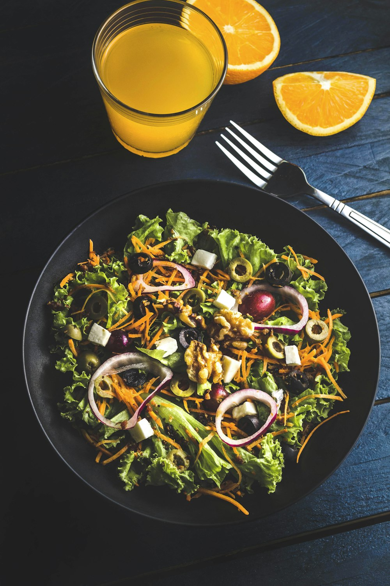
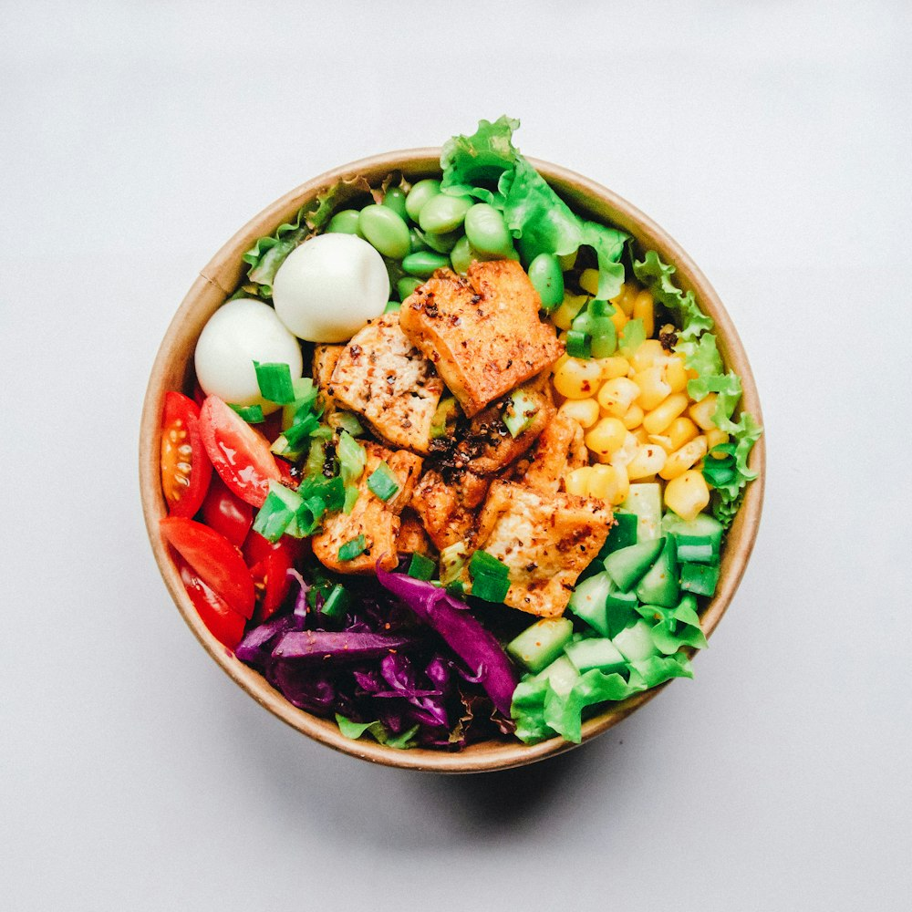
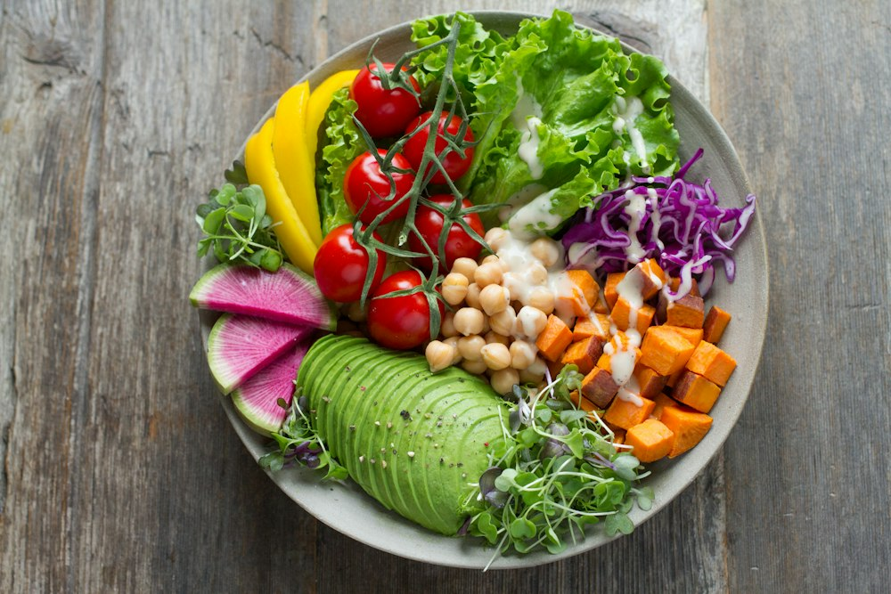

Dev Patel@devcookscooked Mon 9 Nov
Beet and Feta Salad with Orange

Last of the farmers' market beets.
Beet and Feta Salad with Orange · v2
You and Sam
Newest first
Dev Patel@devcookscooked Mon 9 Nov

Last of the farmers' market beets.
Beet and Feta Salad with Orange · v2
Sam Lindqvist@samlindcooked Sun 8 Nov · logged Mon 9 Nov

Quick lunch, used the last of the sushi rice.
Dev Patel@devcookscooked Sat 7 Nov

Mum's lunchbox bowl, still the best.
from his own cookbook
Dev cooked a private recipe. You can see the dish, not the recipe.
Sam Lindqvist@samlindcooked Fri 6 Nov
Improvised. Kimchi, two eggs, whatever was in the fridge.
Dev Patel@devcookscooked Sun 1 Nov
Maria's dal with a handful of spinach stirred in at the end.
Maria's Weeknight Dal with Tarka · v1
Why: Save shows only where a shared recipe is attached, and reads Saved where Maria already has it. The private recipe gets a sentence, never a link or preview. Your own recipe (the dal) needs no Save. No comments in the first release.
Priya Nair @priyabakesSent Sat 7 Nov
When friends share what they cook, it shows up here, newest first.
Why: a waiting request is the fastest way out of empty, so it comes first; Invite copies the link (the share sheet on a phone).